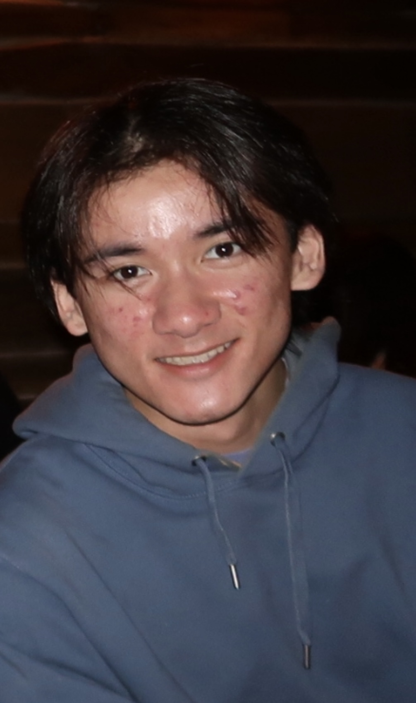

My name is Evren Yaman. I am a current student at Boston University studying Computer Science. I am in my second semester as a junior, and I’m passionate about artificial intelligence, machine learning, and the evolving landscape of large language models.
While I’m still building hands-on experience, I am actively learning about software development, algorithms, and AI systems through coursework, personal projects, and independent research. I enjoy problem-solving, writing clean and efficient code, and exploring how technology can drive innovation.
About Me
